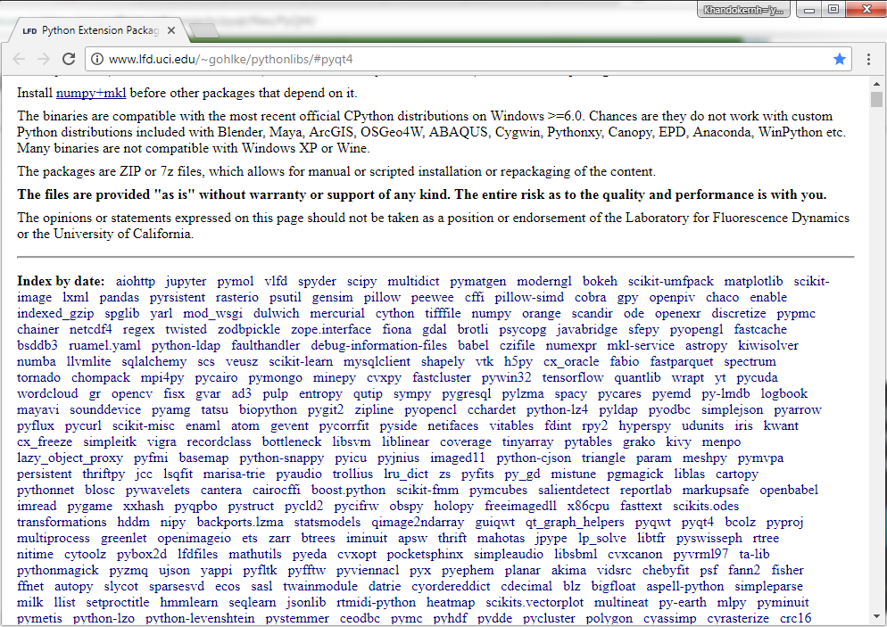
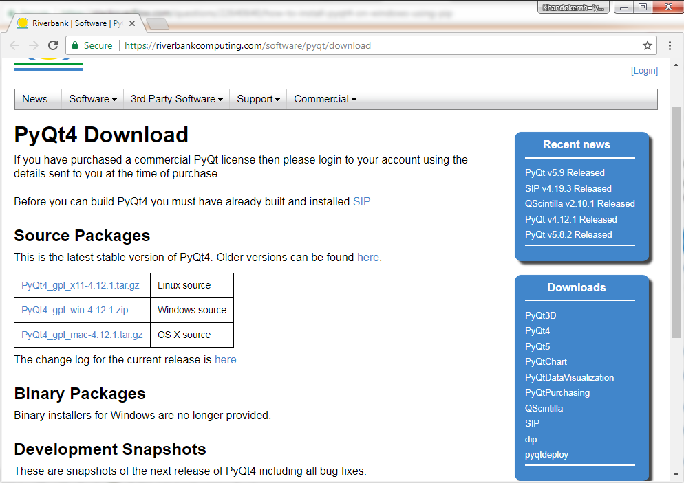
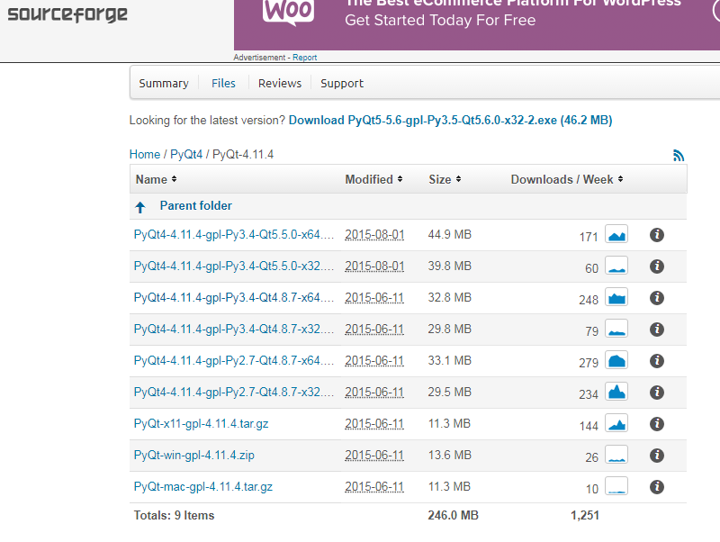
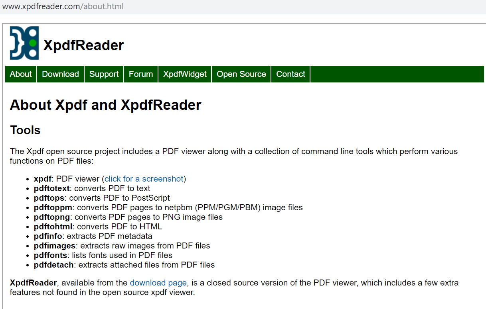
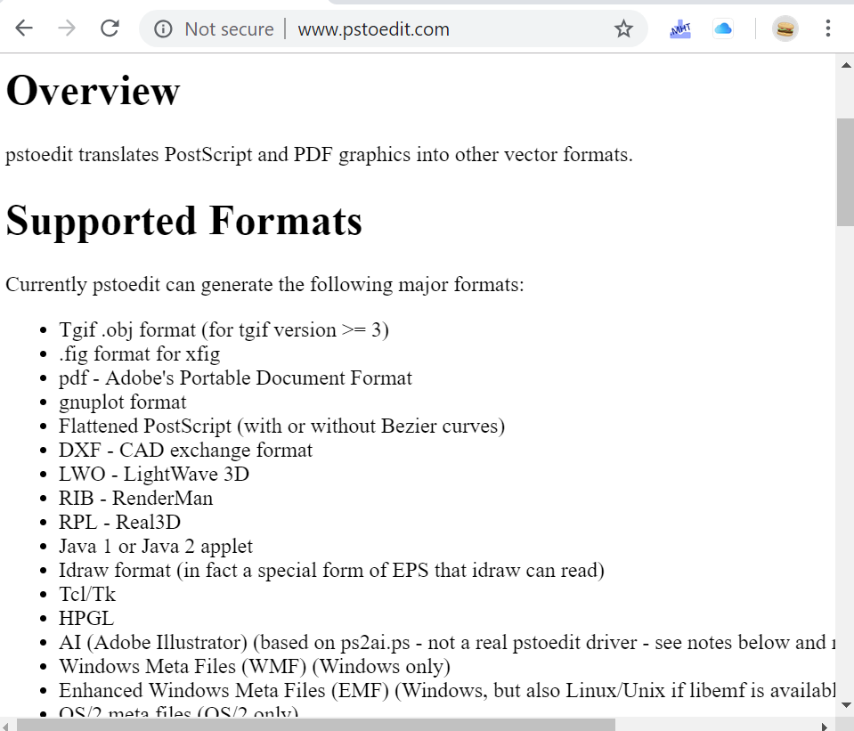
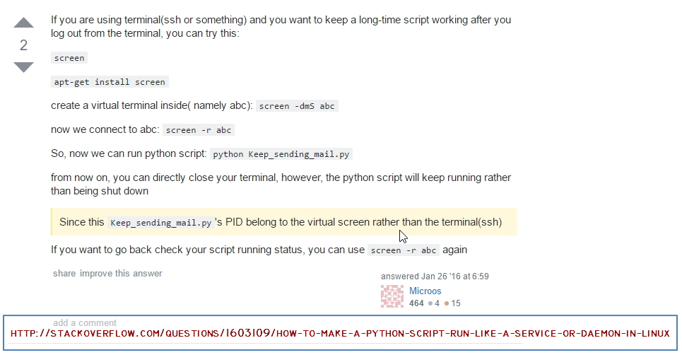

Could not find any portable or executable installer for Windows 10 64 . I downloaded MSI installer of python 2.7.14 for windows 64 bit. Also could not find exe installer for PyQt4. A blog page suggest to download .whl (wheel) file from this
http://www.lfd.uci.edu/~gohlke/pythonlibs/#pyqt4 location and then apply command:
C:\path\where\wheel\is\> pip install PyQt4-4.11.4-cp27-cp27m-win_amd64.whl
I downloaded the file in
PyQt4-4.11.4-cp27-cp27m-win_amd64.whl local private server.
This page
http://www.lfd.uci.edu/~gohlke/pythonlibs/ has huge resource of python wheel installers:

PyQt4 source codes are available in
https://riverbankcomputing.com/software/pyqt/download. It was the previous place where the installer was available. Now the installer is not there.

Sourceforge also has a good collecton of PyQt files in
https://sourceforge.net/projects/pyqt/files/PyQt4/PyQt-4.11.4/ . It has all the different platform packages. But these are not installers. These are may be python library files.

Numpy OpenCV Install Wheel
For windows opencv programming I tried to install necessary packages. I installed numpy for windows from
https://www.lfd.uci.edu/~gohlke/pythonlibs/#numpy location. This is wheel installer. Also found OpenCV 3.1.0 wheeler in this
https://www.lfd.uci.edu/~gohlke/pythonlibs/#opencv location. I installed this OpenCV package. My small apps did works well with this Numpy and OpenCV installed packages. Also my camera feed small app
test03.py runs well.
This page
http://kurokesu.com/main/2016/08/01/opencv-usb-camera-widget-in-pyqt/ showing how to combine OpenCV output images to
qt GUI window. Saved in
/Dropbox/opencv/OpenCV USB camera widget in PyQT.mht.
PyQt5 Install
PyQt5 can be easily install with Python 3.6.2 pip3 by command
./pip3 install pyqt5 or
pip3 install pyqt5 .
It is may require to go to pip folder to run pip. Typical Location is
C:\Users\aronno\AppData\Local\Programs\Python\Python36\Scripts.
During the installation of
DXF2GCode we installed some software like PostScript and PDF Interpreter from
https://www.ghostscript.com/
Another interesting set of tools is XPdf from
http://www.xpdfreader.com/ and
http://www.pstoedit.com/. This
pstoedit tool is a set of command line tool is very usefull to convert PDF to many other formats, even to GCode...


Python Basic Feature Examples
https://program-plc.blogspot.com/2014/10/modbus-rtu-communication-between-plc.html?utm_content=buffer3e8e4&utm_medium=social&utm_source=facebook.com&utm_campaign=buffer
/Dropbox/python/CRCTest.py
http://www.simplymodbus.ca/FAQ.htm#Modbus
http://www.simplymodbus.ca/FC02.htm

uint16_t CRC16cal(char *buffer, uint16_t size)
{
uint16_t i=0;
uint16_t j=0;
uint16_t CRC = 0xFFFF;
uint8_t CRCHi = 0xFF;
uint8_t CRCLo = 0xFF;
uint8_t CRCLSB = 0x00;
for (i=0; i < size; i++)
{
CRC = CRC ^ buffer[i];
for (j=0; j < 8; j++)
{
CRCLSB = (CRC & 0x0001);
CRC = ((CRC >> 1) & 0x7FFF);
if (CRCLSB)
{
CRC = (CRC ^ 0xA001);
}
}
}
return CRC;
}
Offtopic
virtual terminal
